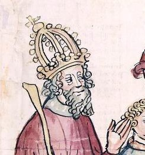

St. Pontian
St. Pontian (230-235) effected a reconciliation between the followers of Hippolytus and the Church. He presided over a synod which confirmed the condemnation of Origen's teachings. When banished to the Sardinian mines by Maximinus, he resigned the papacy in order to make possible the election of another pope.
McSorley, Joseph. An Outline History of the Church by Centuries (from St. Peter to Pius XII). 2nd Ed. 1944.